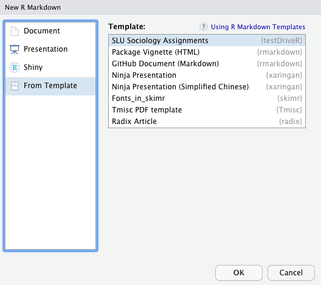

The goal of testDriveR is to provide data sets for teaching statistics and data science courses. This package includes a sample of data from John Edmund Kerrich’s famous coinflip experiment. These are data that I used for teaching SOC 4015 / SOC 5050 at Saint Louis University.
The package also includes an R Markdown template for completing assignments. This was the required format for authoring R Markdown documents in my courses SOC 4015 / SOC 5050 and SOC 4650 / SOC 5650 at Saint Louis University. A quick overview is included below.
Installation
The easiest way to get testDriveR is to install it from CRAN:
install.packages("testDriveR")You can also install the development version of testDriveR from Github with remotes:
{r gh-installation, eval = FALSE} remotes::install_github("chris-prener/testDriveR")
Current Data
The package currently contains five data tables:
-
auto17- A data set containing model year 2017 vehicles for sale in the United States -
childMortality- A data set containing childhood mortality time series data by country from UNICEF -
gss14- A data set containing a selection of variables related to work and education from the 2014 General Social Survey -
gss14_simple- A simple version ofgss14without factors created and without missing data explicitly declared -
kerrich- A data set containing 2000 trials of coin flips by John Edmund Kerrich
Usage
Once loaded, the data contained in testDriveR can be loaded into data frames in your global environment and then explored. For example, to load the auto17 data:
library("testDriveR")
autoData <- auto17
str(autoData)Data Creation
If you are interested in the original data/code used to create the included data, you can find them at:
-
auto17is documented in Chris’sautoDatarepository -
childMortalityis documented in Chris’schildMortalityrepository -
gss14andgss14_simpleare documented in Chris’sgss14repository -
kerrichis documented in theextdatadirectory
R Markdown Template
The package also includes a template that my students use for getting started with R based assignments. It can be accessed from within RStudio by going to File > New File > R Markdown... and then selecting SLU Sociology Assignments under Template:

The template includes YAML for generating both .nb.html and .md output, a pre-formatted date that updates each time the document is knit, and initial code blocks for loading dependencies and data.
Contributor Code of Conduct
Please note that this project is released with a Contributor Code of Conduct. By participating in this project you agree to abide by its terms.